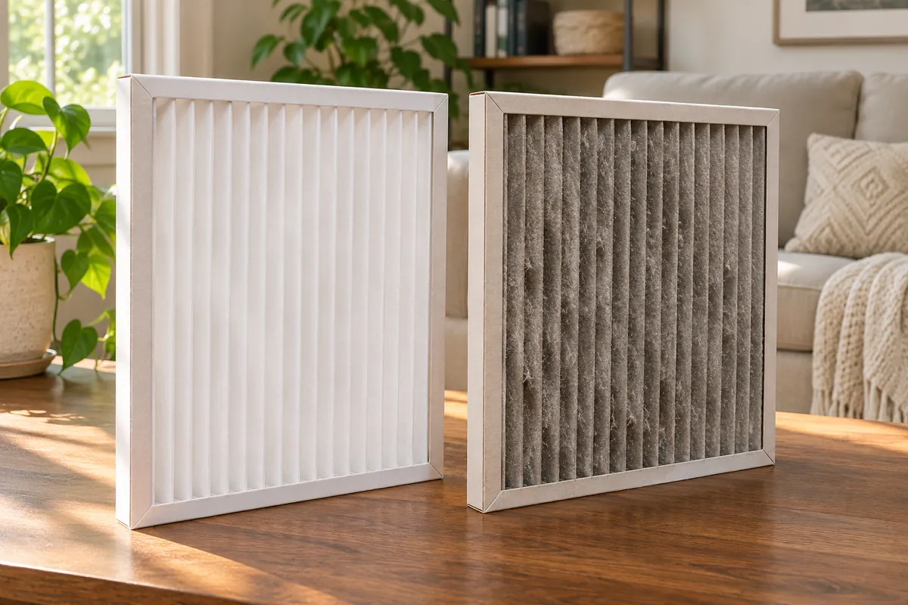

A $100,000 Home and a $1 Million Home Both Need Clean AC Filters
A $100,000 home might have a basic thermostat. A $1 million home might let you cool the upstairs from your phone. Either way, somebody still has to remember to change the AC filter.
Your thermostat may be smart enough to learn your schedule. It’s still waiting for you to handle that rectangle in the ceiling.
I run Ned Air Filters in San Antonio, and my advice is the same for both homes. Check your AC filter once a month. How often you actually change it depends on your system, the type of filter you use, and how quickly it gets dirty.
Dust has never checked a property appraisal
Granite countertops, a three-car garage, and a fancy front door can make a home look great. Dust is perfectly happy to move in with all of them.
As dust and debris build up on a filter, less air can pass through it. A clogged filter can reduce airflow and make it harder for your AC to cool your home efficiently. Changing a dirty filter is a simple part of keeping your system running well. Read the Department of Energy’s home cooling guide.

How often should you change your AC filter?
Start with the manufacturer’s instructions and set a monthly reminder to take a look. A thin, one-inch pleated filter typically needs more frequent changes than a thicker media filter. The amount of dust it catches and how much your system runs also affect how long it lasts. See ASHRAE’s air conditioning guidance.
Check sooner if you have shedding pets, you’re renovating, or your AC has been running heavily through a San Antonio summer. Your dog is adorable. The filter is doing its best to keep up.
If your home has more than one return grille or HVAC system, make a list of where each filter goes and what size it takes. A photo of each filter’s label can save you a trip up the ladder the next time you order.
Should you add an air purifier?
If you want extra air cleaning, think about where you need it most. I recommend looking at these two options alongside your regular AC filter changes.
- For whole-home air purification, consider the RGF REME HALO Zero. This unit installs in your HVAC ductwork. Have a licensed HVAC technician check that it fits your system and handle the installation. See the RGF REME HALO Zero at Ned Air Filters.
- For a bedroom or home office, consider a portable air purifier sized for that room. Check its room-size rating and replacement-filter cost before buying. Browse portable air purifiers on Amazon.
As an Amazon Associate I earn from qualifying purchases.
Make the next filter change easier
Keep a spare in the right size and write the installation date on the filter frame. When your reminder goes off, you’ll know how long it’s been there and have a replacement handy if you need it.
“I think I changed it recently” gets less convincing when you find last year’s date on the frame.
Find the right filter for your home
Whether your home cost $100,000 or $1 million, I’m happy to help you find its next filter. Start with the label on your current one. For thicker filters, jot down the model number and actual dimensions too.
Product information · RGF REME HALO Zero · EPA guide to home air cleaning